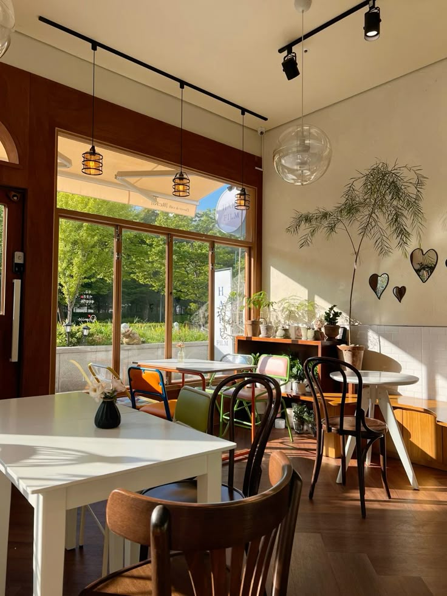

Giới thiệu
Chào mừng bạn đến với Quán Cà Phê Slow Brew - nơi thời gian như chậm lại giữa nhịp sống hối hả. Hương cà phê thơm nồng, không gian ấm áp, âm nhạc du dương - tất cả tạo nên một góc nhỏ bình yên để bạn tận hưởng từng khoảnh khắc.
Câu chuyện về quán và thương hiệu
Brew Slow được sinh ra từ niềm đam mê cà phê và mong muốn tạo ra một nơi mà mọi người có thể tìm thấy sự bình yên trong từng ly cà phê. Chúng tôi tin rằng mỗi tách cà phê không chỉ là một thức uống, mà còn là một câu chuyện, một trải nghiệm đáng nhớ.
Không gian quán
Quán có không gian thoáng đãng, thiết kế theo phong cách vintage pha chút hiện đại. Ánh sáng dịu nhẹ, ghế gỗ êm ái, mỗi góc đều có thể trở thành nơi lý tưởng để đọc sách hay làm việc.
Góc nghệ thuật
Brew SLow không chỉ là quán cà phê, mà còn là một không gian nghệ thuật nhỏ dành cho những người yêu thích sáng tạo. Chúng tôi thường xuyên hợp tác với các nghệ sĩ địa phương để tổ chức triển lãm tranh, ảnh và các buổi biểu diễn nghệ thuật.
Đánh giá từ khách hàng
Anh Trọng: "Cà phê rất ngon, không gian yên tĩnh, phù hợp để làm việc!"
Chị Na: "Mình rất thích mocha ở đây, hương vị rất tươi mát!"
Hồng Sơn: "Nhân viên thân thiện, phục vụ nhanh chóng, chắc chắn sẽ quay lại!"
Liên hệ & Đặt bàn
Chúng tôi luôn sẵn sàng đón tiếp bạn! Để đặt bàn hoặc hỏi thêm thông tin, hãy liên hệ với chúng tôi qua:
Email: brewslow1105@gmail.com
Facebook: Brew Slow Cafe
Instagram: @brewslowcafe.vn